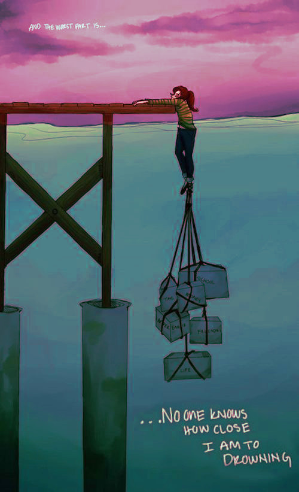
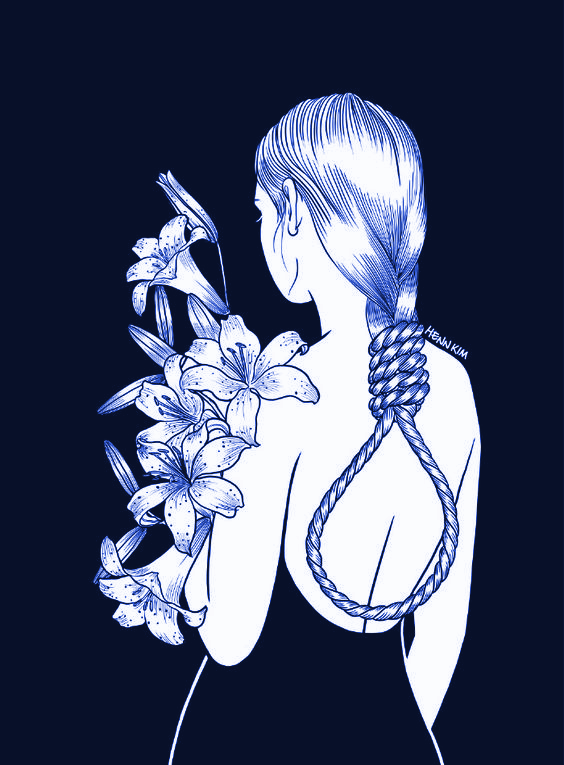

depress
Depression is a common and serious medical illness that negatively affects how you feel, the way you think and how you act.It can lead to a variety of emition and physical problems and can decrease a person's ability to funtion at school or at home.
darkness
When people stuck in this situation, they can't see the bright side of their life, they always think negatively.
cry

People cry out and ask for help, they go into hysterics.
scream
They scream and shout to express their emotion.
asphyxia
They start to fell worthless and guilty, also change in the physiological way, they might change thier appetite or lose weitht, trouble sleeping.
hopeless
Being overwhelmed with negative thoughts is a hallmark symptom of depression. Pessimistice thinking can give way to feelings of despair that worsen depression.
tried
Depression can be exhaustin. It can sap a person of the physical or emotional energy to actively engage in life, leading to constant lethargy.
suicide
Suicide is the way drepress people liberate their own suffer. This is their last line of defense.
goodbye
They have to put down regret, leave their family and friends.
freedom
Leave the world let pepople feel free and no annoyance.